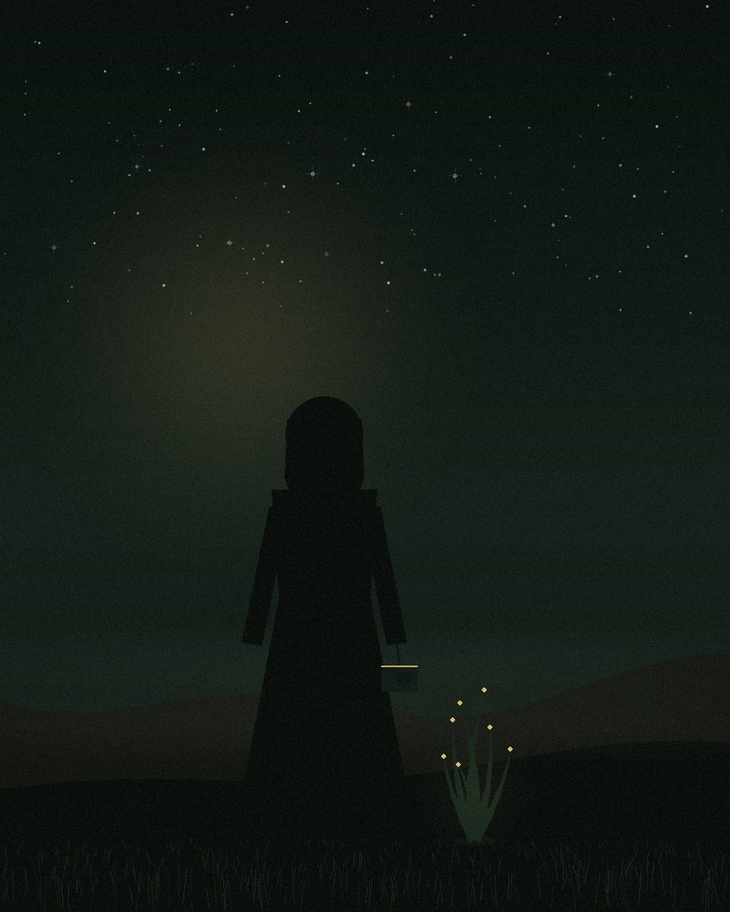

ABOUT
一个慢慢拍照的人

我出门很喜欢带上我的相机，像位陪伴我很久的老朋友。
相机于我不仅是记录工具，还能让我感知当下，在时间长河畔，停驻在这，看一朵水花溅起又坠落。我会和她一起记录很多我眼中很美、很可爱的事物。
我的脑海中经常会浮现有各种各样的意象，近两年经常出现的是一株草，一株在石缝中匍匐、有着好奇心、想去进行光合作用的草，这是我将作品集取名为《野有叙》的缘故。人人自带宇宙，人与人之间的交汇像不同星系的一样会有部分融合，所以整个网站带有宇宙的元素。
最近也开始与 AI 合作一些影像：我给它看我眼中真实世界的样子、向它描述我脑海中的画面，它回赠我一些梦。这些梦也待在这个房间里，和照片放在一起，彼此作伴。
2026.7.27日开始制作，7.30日正式上线。终于拥有了自己的网站，制作当天激动得将近凌晨四点才上床睡觉。
注：
1. 感谢指导老师——暖暖老师、十月老师（以上排名按照指导时间先后顺序）。在暖暖老师那里学光影，在老师的指导下，完成人像组作品《序章》和《蔓生》；在十月老师那边学流动，在老师的指导下完成人像组作品《自若》、《未晞》。
2. 网页中静态照片均为摄影实拍。
先是光，然后是风，再然后才是构图。
技术是末尾的事，排在"那一刻是否心动"之后。